いろいろなゲームのジャンルに、新しい見た目（ルック）を当ててみた小さな試作集です。どれもブラウザで動きます。ほとんどは操作がなく、自動で動く場面を見るだけです。自分で操作して遊べるものは「あそべるゲーム」にまとめています。
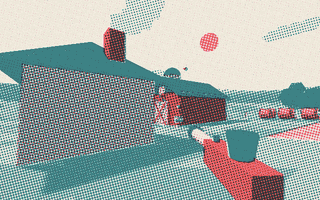
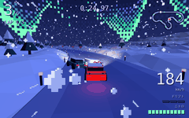
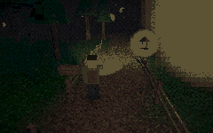
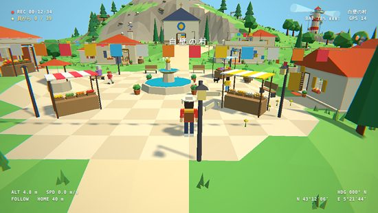
見るだけの試作ではなく、自分で操作して遊べるもの。2 色刷りの農場の FPS「版の農場」、レースの「雪夜ラリー」、夜の森を歩く「灯りの森」、島をめぐる「島あるき」、粘土の塔をのぼる「ねんどの塔のぼり」など。
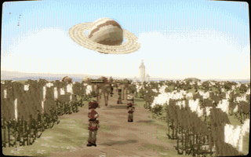
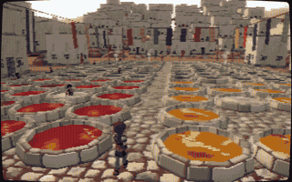
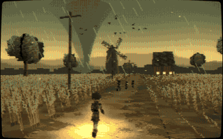
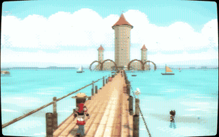
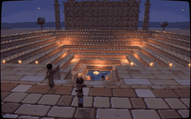
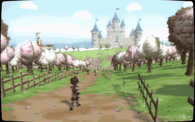
毎朝 1 つ、新しいテーマで 1 場面を足していく集。「描きこんだテクスチャとブラウン管」のテイストで、持ち主の好みを中心に、ときどき まったく新しい方向もまぜる。
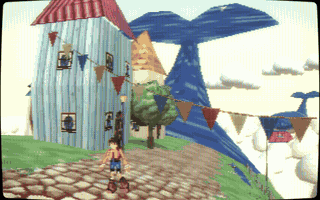
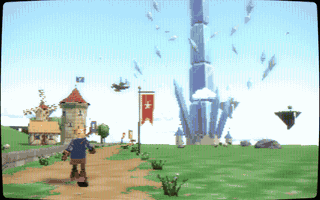
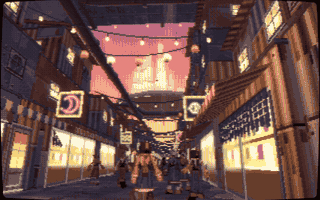
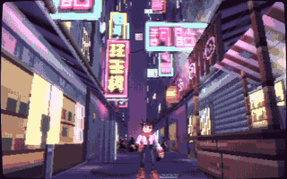
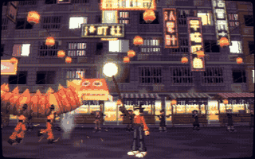
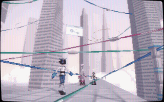
同じテイストで作った 5 つの世界の 50 案。絵本の中のでたらめな世界、霧と飛空艇の王国、汚いが活気のある下層と手の届かない上の都市、ネオンの港町、白を基調としたなんでもありの電脳世界。巨大な物や遠くの物が見える場面を多くしました。
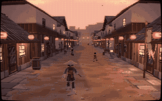
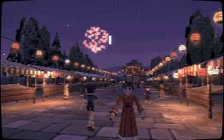
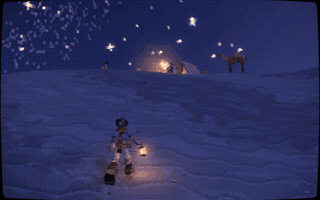
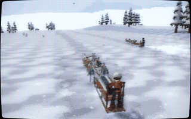
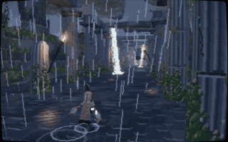
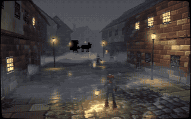
第 8 集と第 9 集のテイストのまま、新しい土地へ広げた 50 案。和の里、砂と草原の旅、雪と北の国、密林と古い遺跡、蒸気と歯車の町。それぞれに明るい場面とダークな場面をまぜています。
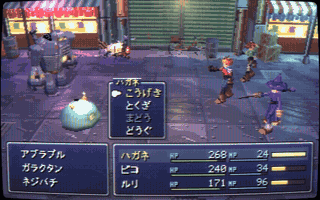
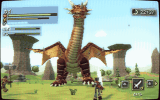
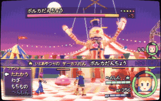
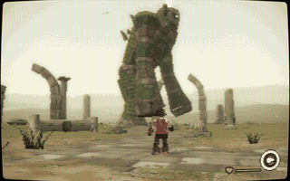
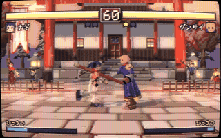
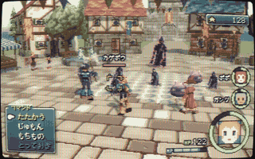
ブラウン管のテイストの場面と人で、実際のゲームの画面を作ってみた 29 案。ターン制のバトル、竜の狩り、ロックオンのアクション、固定カメラのホラーなどと、そのボス戦。対戦格闘、戦術、シューティング、ステルス、町の会話と店、大軍のアクション、広い世界の探検も。
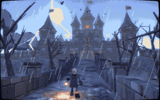
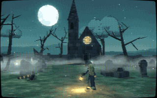
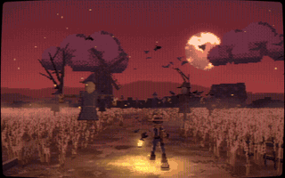
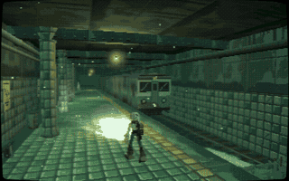
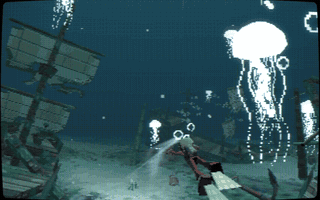
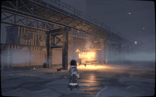
第 8 集と同じテイストで、雰囲気をダークにした 50 案。夜、雨、霧、嵐、さびれた場所を、月の光やランタンのあかりで見せます。
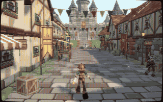
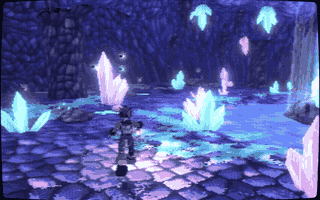
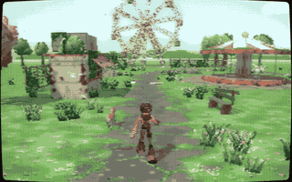
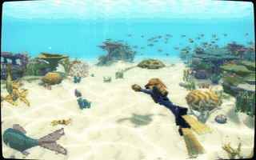
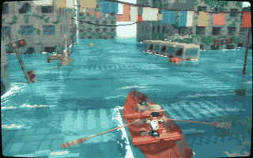
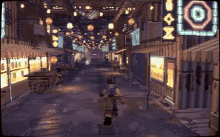
第 7 集の「描きこんだテクスチャとブラウン管」のテイストで、題材を広げた 50 案。ファンタジーの町と自然、草と光のもどった廃墟、海の中、海に浮かぶ廃墟、鉄の都市の下町を、5 頭身の人物が歩きます。
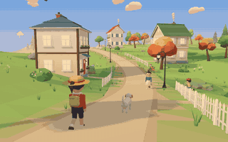
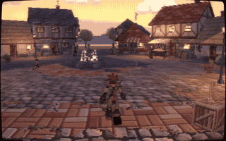
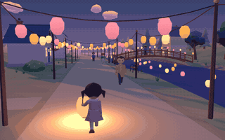
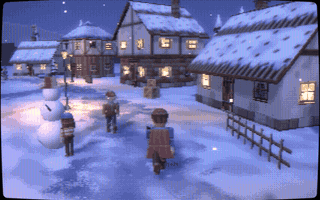
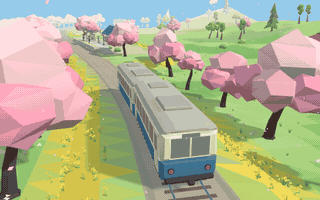
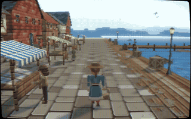
箱の組み合わせに見えすぎた第 6 集を、2 つの方向で直したもの。面を増やして人や家を作りこんだ「こまかいローポリ」と、少ない面にドット絵のテクスチャを描きこみ、ブラウン管のにじみで見せるもの。
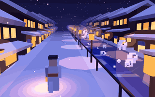
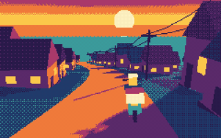
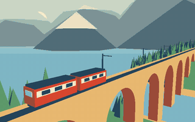
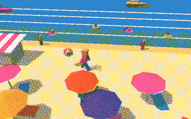
気に入ってもらった傾向だけで作った 50 案。どれも歩いてみたくなるローポリの 3D の場面で、光と天気の空気、立体をドット絵や版画・画材で描き直したもの、小さな箱庭、カメラごしの映像の 5 系統です。
第 1 集と同じように幅ひろく探した、新しい見立て。シルクスクリーンや切手シートなどの印刷と紙、壁画と絵巻、暗視スコープや 8 ミリフィルムなどのカメラ、古い画面、雨の夜の光、歯車やゾートロープのからくり、七宝やキルトの工芸、ダンボールやスノードームの模型。
第 1 集の「06 色鉛筆のハッチング」と同じ描き方のまま、場面を変えたもの。牧場、港町、鉄道、街、月面、厨房などの箱庭に加えて、FPS・TPS・見下ろし RPG・レース・横スクロール・フライトの画角も、紙と色鉛筆の線で描いています。
黒い空間に浮かぶ小さなジオラマを、立体のままドット絵として描いたもの。1 場面は 1 つの色相と差し色 1 つだけで、ゆっくり回ります。大きなボスの回もあります。
第 1 集から選んだ 20 案の傾向で作りこんだもの。奥行きと光のある場面、ローポリ、ドット絵、カメラごしの映像、小さな模型。21 は 2 色刷りの農場を歩いて撃てる FPS で、刷り色を 6 種から選べます。
FPS、RPG、パズル、レースなどに、印刷・画材・古い画面・手芸・模型といった見立てを 1 つずつ当てたもの。金色のますが、お気に入りに選んだ 20 案です。